Music
The 3 Bands with the most songs I have on my playlist. I dont hand an exact list of my top 5 bands or something, but I can say without a doubt, my favorite band is King Crimson.(I have exactly 75 of their songs on my playlist).
King Crimson
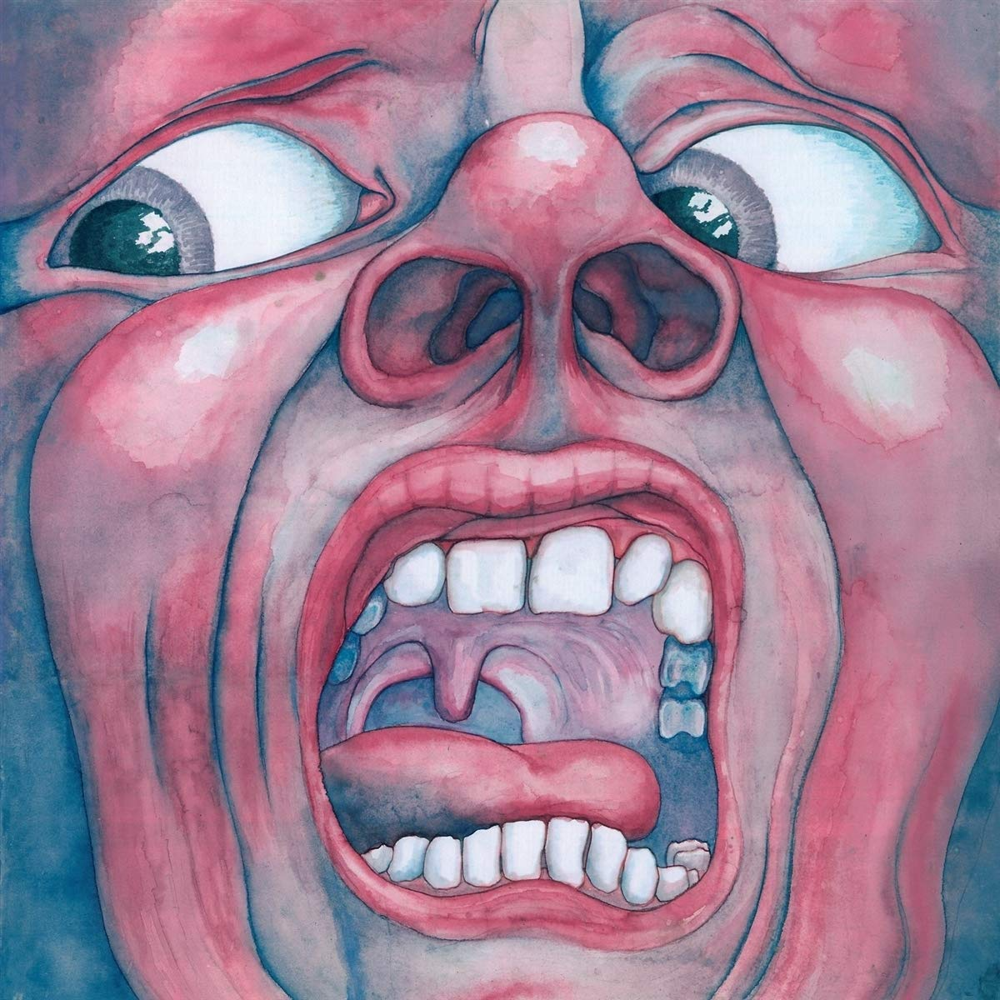
In the Court of the Crimson King
Released: 10 October 1969
Personal favorite: 21st Century Schizoid Man
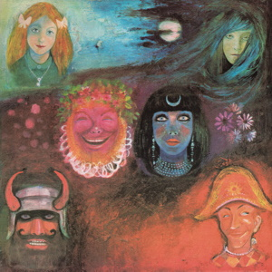
In the Wake of Poseidon
Released: 15 May 1970
Personal favorite: In The Wake Of Poseidon
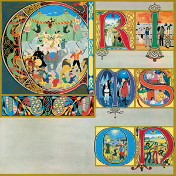
Lizard
Released: 11 December 1970
Personal favorite: Lizard
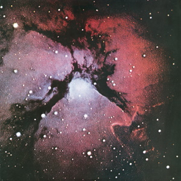
Islands
Released: 3 December 1971
Personal favorite: Formentera Lady

Larks' Tongues in Aspic
Released: 23 March 1973
Personal favorite: Exiles
Starless and Bible Black
Released: 29 March 1974
Personal favorite: The Night Watch
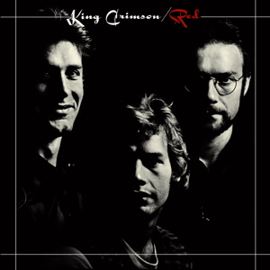
Red
Released: October 1974
Personal favorite: Fallen Angel
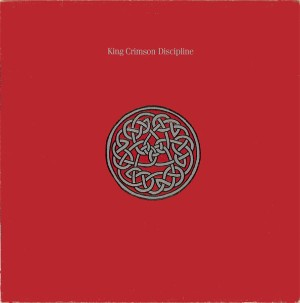
Discipline
Released: 2 October 1981
Personal favorite: The Terrifying Tale of Thela Hun Ginjeet
Beat
Released: 18 June 1982
Personal favorite: Neurotica
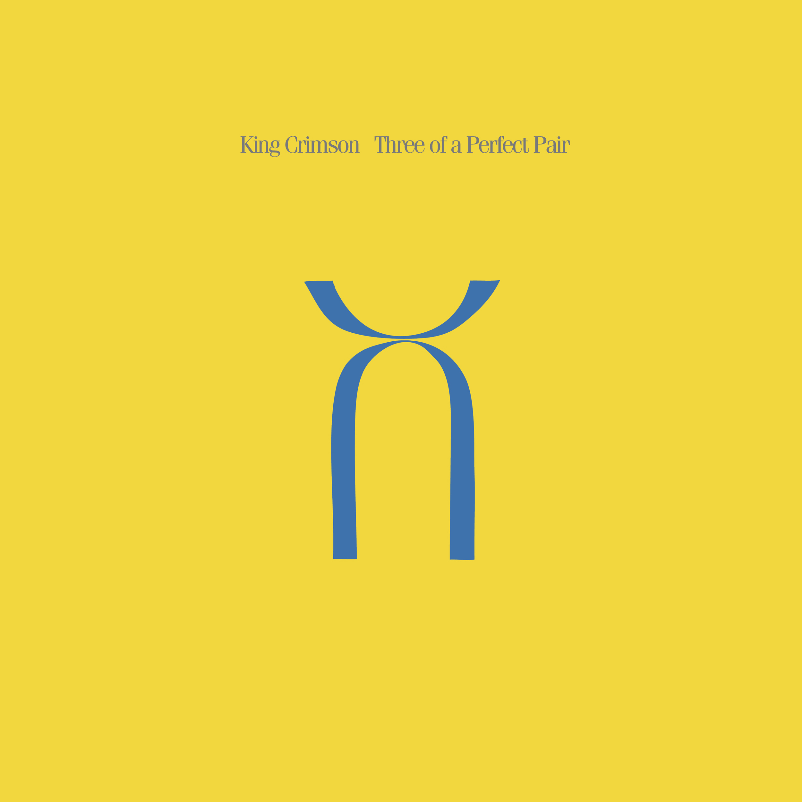
Three of a Perfect Pair
Released: 23 March 1984
Personal favorite: Sleepless
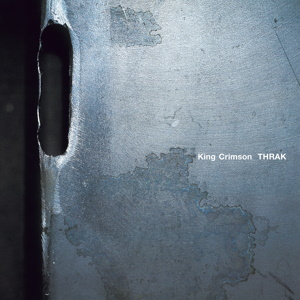
Thrak
Released: 3 April 1995
Personal favorite: Dinosaur
The Construkction of Light
Released: 23 May 2000
Personal favorite: Into The Frying Pan
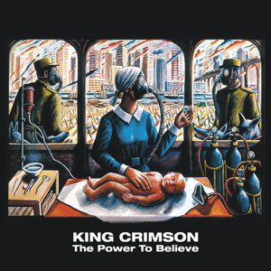
The Power to Believe
Released: 24 February 2003
Personal favorite: Happy With What You Have To Be Happy With
Marty Robbins
Jamiroquai

Emergency on Planet Earth
Released: 1993
Personal favorite: Too Young to Die
The Return of the Space Cowboy
Released: 1994
Space Cowboy
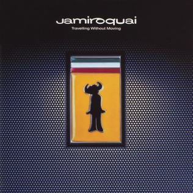
Travelling Without Moving
Released: 1996
Personal favorite: Cosmic Girl
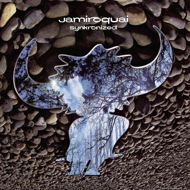
Synkronized
Released: 1999
Personal favorite: Deeper Undergound
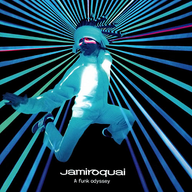
A Funk Odyssey
Released: 2001
Personal favorite: Little L
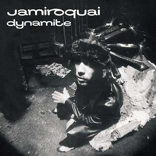
Dynamite
Released: 2005
Personal favorite: (Don't) Give Hate a Chance
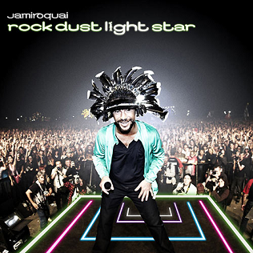
Rock Dust Light Star
Released: 2010
Personal favorite: Smoke and Mirrors
Automaton
Released: 2017
Personal favorite: Something About You